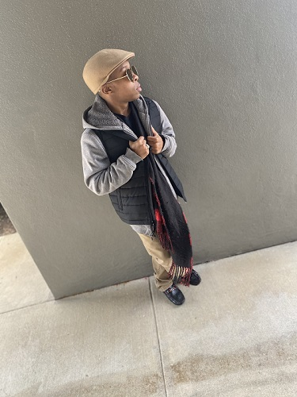

Christian Branch
Communications Specialists
My name is Christian Emmanuel Branch. I am a graduate of William Peace University in Raleigh N.C. I studied Communications with a concentration in Public Relations and a minor in Marketing. I am currently studying for my certification in Web and Graphic Design at Wake tech.
Add another paragraph if needed.
Featured Projects
View selected projects below. More information can be found at boldngraphics.
Bold and Graphics
Bold and Graphics is a Web and Graphic design business dedicated to developing Websites and Graphics for clients and their businesses. We also include Logos,Banners, and all Social media.
Graphic Design BusinessWork Experience
Optional paragraph for work experience summary. Not a part of the job details. Delete if not being used.
Communications Intern
Free Radikal Entertainment
Date at job
Job summary goes here. Add as many paragraphs as you need.
Optional list:
- Delete this list if you don't need it.
- Created...
- Lead...
- Responsible for...
Education
William Peace University
Communications concentration in Public Relations and minor in Marketing
William Peace University scholarship recipiant Derrick Whittenburg Scholarship recipiant